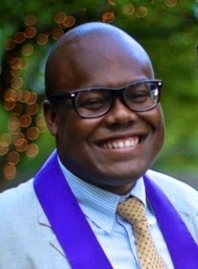
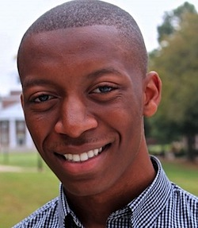
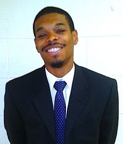

Friends,
Much has been written about the 1963 March on Washington for Jobs and Freedom.
The march was a beautiful expression of the movement for beloved community of which the Fellowship of Reconciliation has been an important part. It was a powerful moment in U.S. history and a momentous moment in the black-led Freedom Struggle in the United States.
And we're excited to tell you about how FOR has been able to sponsor some of the next generation of leaders for civil and human rights.
Fifty years of active nonviolence
By the time Bayard Rustin was organizing the March in 1963, he was no longer working on FOR's behalf -- having previously organized the 1947 "Journey of Reconciliation," the predecessor of the 1961 Freedom Rides -- but FOR celebrates his central role in this historic effort. Without a doubt, thousands of people connected to FOR attended the 1963 March on Washington. We are pleased to hear that President Obama will be posthumously awarding Bayard Rustin the Presidential Medal of Freedom.
This year, for the 50th anniversary of the March, FOR has partnered with the Samuel Dewitt Proctor Conference to honor veteran activists while strengthening and affirming a new generation of justice activists who will not only engage in the commemorative events, but pledge to engage in on-going intergenerational educational and advocacy initiatives. (The conference is also being hosted by the Addie Wyatt/Bill Lucy Institute.)
FOR Regional Coordinator/Organizer for the Southeast and Mid-Atlantic, Rev. Lucas Johnson, is bringing five remarkable young leaders to Washington D.C. in order to participate in the training and the commemoration of the March.
Read on to learn about FOR delegates to the Living Legacies Civil Rights Recognition Tour and Teach-Ins.
Marcus Lee
I am a junior sociology major at Morehouse College, and a native of Charlotte, North Carolina.
I locate myself in the movement somewhere between the Negro Question and the Queer Question. With those questions in mind, my career aspiration is to build a life as a scholar-activist working to find, refine, and create answers.
I'm currently working toward that goal by gaining experience as an activist and refining myself as a student. I serve as the president of Morehouse SafeSpace -- Morehouse's Gay-Straight Alliance. SafeSpace strives to build bridges among diverse groups of people by creating spaces of revolutionary love and vulnerability.
I am also a UNCF Mellon-Mays Undergraduate Research Fellow, and my research is concerned with recreating masculinities among Black men. I would deem these two positions most important to me and most representative of who I am because they overlap with each other and they reflect where I want to be in the future. I'm so honored to be a part of a movement that I only read about as a child.
Nicole Newman
 Nicole is a native of Washington D.C. and a graduate of Trinity University with a degree in political science and history. She is an AmeriCorps Vista alumna and has spent time working in local nonprofits getting hands-on experience in providing service, building coalitions, coordinating volunteer service, and working in community organizing. She is a board member of UnSectored, former board member of Capital Cause and a member of the National Council for Negro Women. Nicole is a native of Washington D.C. and a graduate of Trinity University with a degree in political science and history. She is an AmeriCorps Vista alumna and has spent time working in local nonprofits getting hands-on experience in providing service, building coalitions, coordinating volunteer service, and working in community organizing. She is a board member of UnSectored, former board member of Capital Cause and a member of the National Council for Negro Women.
Nicole serves on the Washington Interfaith Network's Core Team at Luther Place Memorial Church and is an active member at Norbeck Community Church where she coordinates community service and works with the young adult ministry. She is the 2015 Multicultural Youth Leadership Event co-team leader for the Evangelical Lutheran Church in America and works with the Organizing for Mission Cohort of the ELCA.
She is an avid writer and has blogged for Friends of Ebonie as well as writing for her own blog, Life Intentionally.
Kaylan Frazier
I am a nursing student at Cabarrus College of Health Sciences at Carolinas Medical Center Northeast. Current member of the United Way Young Leaders program and past member of the NAACP, the opportunity to be part of the “Living Legacies Civil Rights Conference” for me is sure to be a grand experience.
I believe that by educating ourselves on past and present civil rights laws and movements, we honor not only past civil rights activists but our ancestors and future generations as well. If we are ignorant of our history and our current state of oppression, we can only teach that ignorance; therefore it is our responsibility to work towards wisdom. If we remained chained by the injustices and challenges we face as African Americans, we can only teach our prejudice and therefore we must work towards our personal and collective freedoms.
This conference for me will only justify the importance of unity and fighting for our God-given rights to reach our fullest potential in this life. We have got to learn to trust again, believe again, and work together again in order to evoke the momentum that our predecessors had while fighting for the rights we have now. I am truly looking forward to the “restructuring of the Jericho road!”
Jamal T. Lewis
Jamal is a senior music major at Morehouse College from Atlanta, GA. He currently serves as the marketing/public relations director of Morehouse SafeSpace, and has worked strategically to rebuild the organization's identity. Under his tutelage, the organization experienced an expansion in social media, web/graphic design, event performance, and the curation of online, print, and press material.
Jamal is also the assistant program director for the college's newest pilot freshman cohort, the Bayard Rustin Scholars, and have helped to shape and transform the campus culture through many social justice/conscious initiatives. He has found his place in the movement through his lived experiences and wholly values living at the intersection of many identities.
The March on Washington singlehandedly changed American history and it paved the way for the work that many people (including myself) are doing today. As a Black Gay male, I'm truly moved and liberated knowing that I'm continuing the work headed by brother Bayard Rustin; and, to that point, being apart of this momentous occasion is remarkably honoring and humbling. It is one thing to read about history, but to live and breath it ... truly awe-inspiring and electrifying.
Irving David Allen
I am a volunteer with the Beloved Community Center in Greensboro, North Carolina. I am also the son of William Steven Allen, the first black Superior Court Justice in Greensboro, and the nephew of David Richmond, one of the Greensboro Four, whose courage to sit-in at the Woolworth's lunch counter in 1960 helped stimulate and empower the Civil Rights Movement. My family history has taught me that through courage, determination, and collaboration, positive change is possible.
Nevertheless, I identify with the generation of young black men who feel lost and abandoned by their communities. I have, through the grace of God and the support of my family and community, become a good father and begun working toward my college diploma. I have renewed my faith -- in myself as well as other people -- and can testify that all things are possible through Christ. While keeping that in mind I know also that faith without work is dead.
I think my story can inspire my peers, but I am aware that inspiration is not enough. I feel this Proctor conference will equip me with the tools I need to be more effective at my work and allow me to further connect a powerful history with my passionate present. It is important to honor the sacrifices our elders made for us but also to maintain a dialogue with those of this generation who are building upon that foundation in order to change things for the better. This conference's focus on the economy, the creation of jobs, and the deep roots of racism that still plague our criminal justice system, will lead to powerful change. I intend to be not only a witness to but an agent of that change. We must maintain a network of committed activists because social justice work cannot be accomplished by individual efforts; together as a community, we will achieve our common goals of equality and social justice.
Top image: Bayard Rustin and Cleveland Robinson, Aug. 7, 1963 in Washington, D.C. (Library of Congress, public domain.) |